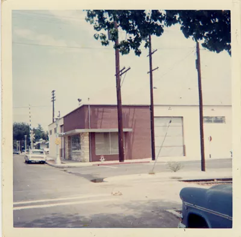
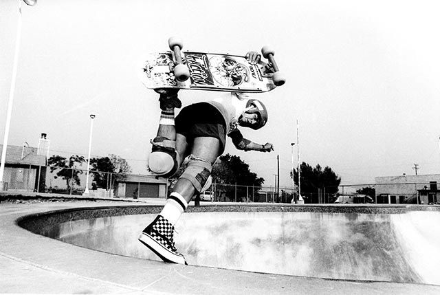

About Vans
Brothers Paul Van Doren and Jim Van Doren along with partners Gordon Lee and Serge Delia open for business at 704 E. Broadway in Anaheim, Calif. on March 16. The Van Doren Rubber Company is unique in that it manufactures shoes on premises and sells them directly to the public.
Get to Know the Company
On that first morning, 12 customers purchase shoes, which are made that day and ready for pick-up in the afternoon. The name House of Vans is coined Early 70s Skateboarders who like Vans' rugged make-up and sticky sole are seen sporting for the first time and is showcased on the windows of the Anaheim location. p>
Vans Off The Wall
The Sk8-Hi was introduced in 1978 as "Style 38," and showcased the now-iconic Vans Sidestripe on yet another innovative silhouette. As only the second model featuring the recognizable marker formerly known as the "jazz stripe," the Sk8-Hi took skate functionality to the next levelâabove the ankle, where skateboarders used and abused their lower extremities the most. The Sk8-Hi not only shielded bones from skateboards catapulted at them but also brought a whole new look to the park.